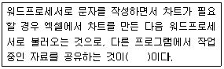
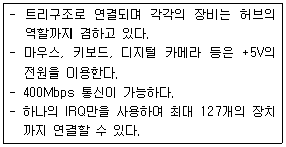

PC정비사-1급 (2018-10-28 기출문제)
1과목: PC운영체제
1. Windows 7 Professional에서 키보드 설정 시 [키보드 등록정보]의 [속도] 탭에서 설정할 수 없는 기능은?
- 재입력시간
- 반복속도
- 입력시간
- 커서 깜빡임 속도
(정답률: 50%)

2. Windows 7 Professional에서 가상 메모리 설정시 제공되는 정보가 아닌 것은?
- 드라이브[볼륨 레이블]
- 모든 드라이브의 총 페이징 파일 크기
- 선택된 드라이브의 페이징 파일 크기
- 선택된 드라이브의 세그먼트의 크기
(정답률: 63%)
3. 비트라커 드라이브 암호화, VHD 부팅 등 Windows 7의 모든 기능을 지원하는 에디션은?
- Starter
- Home Premium
- Ultimate
- Enterprise
(정답률: 70%)
4. Windows 7의 사용자 인터페이스에 대한 설명으로 잘못된 것은?
- 프린터가 공유되어 있으면 다른 장소에서도 인쇄가 가능하다.
- 터치스크린을 지원한다.
- 하나 이상의 파일이나 폴더를 한꺼번에 선택하려면 Ctrl 키를 누르고 마우스로 해당 파일이나 폴더를 클릭 해주면 된다.
- 탐색기 창에서는 숨겨진 파일이나 폴더를 볼 수 없다.
(정답률: 67%)
5. 프로그램 추가/삭제를 사용하여 프로그램을 삭제하였는데도 깨끗이 지워지지 않을 경우 살펴보아야 할 곳은?
- 휴지통의 휴지통 비우기
- 시스템 도구의 디스크 정리
- 하드디스크 드라이브의 나머지 용량
- 레지스트리
(정답률: 66%)
6. 파일 할당 테이블(FAT)을 틀리게 설명한 것은?
- [FAT12] - MS-DOS 초기부터 주로 쓰였으며, 플로피디스크에서는 여전히 이용된다.
- [FAT16] - 32메가바이트 이상의 하드디스크를 지원하기 위해 MS-DOS 3.0과 함께 나왔으며, Windows 95까지 주로 이용되었다. 최대 2기가바이트 파티션을 지원한다.
- [FAT32] - 2기가바이트 이상의 하드디스크를 지원하며, Windows 95 OSR2부터 이 파일 시스템을 사용할 수 있다
- [exFAT] - Windows Vista 서비스팩1, Windows 임베디드 CE 6.0부터 지원하고, FAT16의 한계를 극복하고자 개발되었다.
(정답률: 46%)
7. 다음 보기 중 나머지와 성격이 다른 하나는?
- Windows 7
- Lotus Notes
- Linux
- MAC OS X
(정답률: 73%)
8. Windows 7의 레지스트리에 대한 설명 중 잘못된 것은?
- 텍스트 기반이며, 크기가 32KB를 넘지 못한다.
- 정렬된 계층구조를 가진다.
- HKey_Users키로 사용자별 정보를 지원한다.
- 원격지에서 관리와 시스템 정책을 할 수 있다.
(정답률: 42%)
9. Windows 7의 버전에 속하지 않는 것은?
- Home Premium
- Professional
- Datacenter Server Edition
- Home Basic
(정답률: 73%)
10. 컴퓨터 처리 시스템의 성능을 향상시키고 데이터 처리의 생산성 향상을 위해 고려되어야 할 사항으로 잘못된 것은?
- 컴퓨터 프로그램의 처리와 제어 시스템의 동작상태를 항시 감시해야 한다.
- 데이터 처리를 위한 각종 컴퓨터 구성 H/W 요소의 활용이 효율적으로 이루어져야 한다.
- 데이터를 처리하기 위한 정보는 완벽한 상태로 준비가 되어야 한다.
- 컴퓨터를 합리적이고 능률적으로 이용하기 위해서 인적자원과 업무수행의 환경과 조건이 구비되어야 한다.
(정답률: 39%)
11. 다음 ( )에 적당한 용어는?

- OLE
- DLL
- INI
- PCX
(정답률: 70%)
12. 컴퓨터의 자원을 통합적으로 관리하고 제어하는 시스템소프트웨어로서 컴퓨터에 대한 전문 지식을 갖고 있지않은 초보자도 쉽고 편리하게 컴퓨터를 사용할 수 있도록도와주는 것은?
- 문서 처리 프로그램
- 사용자 개발 프로그램
- 운영체제
- 패키지 프로그램
(정답률: 78%)
13. 시분할 시스템에 대한 설명이 아닌 것은?
- CPU가 한 사용자로부터 다른 사용자로 빠르게 교환시켜 주는 시스템
- 많은 사용자가 동시에 사용할 때도 실제는 한 개의 컴퓨터를 사용하는 시스템
- 다중 프로그래밍 체제와 대화형 체제를 합친 방식의 시스템
- 많은 시간을 필요로 하는 처리 방식의 시스템
(정답률: 53%)
14. 입력되는 자료들을 일정 기간 동안 또는 일정량의 자료를모아 한 번에 처리하는 운영체제 방식은?
- 온라인처리방식(On-Line Processing System)
- 다중프로그래밍체제(Multiprogramming System)
- 일괄처리체제(Batch Processing System)
- 시분할체제(Time Sharing System)
(정답률: 77%)
15. Windows 7 운영체제의 역할과 거리가 먼 것은?
- 프로세스 관리
- 디바이스 관리
- 파일 시스템 관리
- 프로그램 제작
(정답률: 79%)
2과목: PC주변기기
16. 메인보드에 제공되는 컨트롤러 중에서 CPU를 거치지 않고 PC의 메모리로 자료를 보내거나, 메모리의 자료를 다른 장치로 보내는 역할을 담당하는 것은?
- 키보드 컨트롤러
- DMA 컨트롤러
- 인터럽트 컨트롤러
- 프로그래머블 컨트롤러
(정답률: 68%)
17. CISC 프로세서와 RISC 프로세서에 대한 설명 중 잘못된 것은?
- CISC : RISC 보다 레지스터의 수가 많다.
- RISC : CISC 보다 처리 속도가 빠르다.
- CISC : RISC 보다 비싸며 전력 소모가 많다.
- RISC : 고정된 길이의 명령어를 사용한다.
(정답률: 33%)
18. 다음에서 설명하는 장치는?

- PS/2
- USB 2.0
- IDE
- AMR Modem
(정답률: 73%)
19. 컴퓨터의 주변장치 연결 방식에는 여러 가지 종류가 있다. 다음 중 가장 빠른 데이터 전송 속도를 제공하는 연결 방식은?
- USB1.1
- IEEE1394
- PS/2
- Parallel
(정답률: 56%)
20. 캐시 메모리는 PC의 내부에서 어디에 위치하는가?
- CPU와 메인 메모리 사이
- CPU와 주변 장치 사이
- 메인 메모리와 보조 메모리 사이
- CPU와 보조 메모리 사이
(정답률: 72%)
21. 하드디스크의 저장방식이 아닌 것은?
- NRZ(Non Return to Zero)
- IDE(Integrated Drive Electronic)
- MFM(Modified Frequency Modulation)
- RLL(Run Length Limited)
(정답률: 47%)
22. 손가락의 압력을 감지하는 방법을 사용하여 움직임을 감지하는 지시 장치는?
- 트랙볼
- 휠 마우스
- 터치패드
- 펜 마우스
(정답률: 70%)
23. 프린터의 전송 모드에 대한 규약이 아닌 것은?
- EPP
- ECP
- LPT
- SPP
(정답률: 41%)
24. 파워서플라이의 출력 DC 전압의 종류로 잘못된 것은?
- +3.3V
- +5V
- +10V
- +12V
(정답률: 64%)
25. 키보드 제어기(Keyboard Controller)의 기능으로 옳지 않은 것은?
- 키보드를 자체 검진하며, 효율적으로 키보드를 사용할 수 있도록 한다.
- CPU와 정보를 교환할 수 있다.
- 비디오 제어기, 디스크 제어기 등의 정보의 흐름을 제어한다.
- 문자의 입력과정에 발생된 전기적 신호를 8비트 신호로 변환한다.
(정답률: 47%)
26. 광디스크에 사용되는 라이트스크라이브(LightScribe) 기술에 대한 설명으로 잘못된 것은?
- 레이저를 이용해 사용자가 원하는 문자나 도안을 CD 또는 DVD 미디어 표면에 인쇄하는 기능이다.
- 광학저장장치가 라이트스크라이브를 지원해야만 사용할 수 있다.
- 라이트스크라이브가 지원되는 특수 코팅된 전용 공 CD 또는 DVD에만 사용할 수 있다.
- 한번 기록된 문자나 도안을 다시 지우고 입력할 수 있다.
(정답률: 69%)
27. 레이저 프린터에 대한 설명 중 잘못된 것은?
- 미국의 HP사가 세계 최초로 개발하였다.
- 램과 마이크로프로세서를 내장하고 있다.
- PCL과 PS라고 하는 내장된 프린터 언어를 사용한다.
- 그림이나 문자가 종이 위에 토너가루로 나타나면 레이저의 열을 이용하여 토너가루를 녹여 출력물을 완성한다.
(정답률: 43%)
28. 프린터의 인쇄방식 중 충격식 인쇄 엔진방식을 갖는 프린터는?
- 도트 프린터
- 열 전사 프린터
- 잉크 분사 프린터
- 레이저 빔 프린터
(정답률: 69%)
29. 주기억장치의 일반적인 특성이 아닌 것은?
- 반도체 소자를 주로 사용한다.
- 비휘발성이다.
- 보조기억장치에 비해 속도가 빠르다.
- SDRAM, DDR-SDRAM, RDRAM등이 사용된다.
(정답률: 61%)
30. CPU와 주변기기 사이에서 데이터의 입, 출력시 발생되는속도의 차이를 줄여주는 기억장치는?
- MOUSE
- BUS MASTER
- CACHE
- VROM
(정답률: 68%)
3과목: 디지털 논리회로
31. 전가산기(full adder)의 설명으로 옳은 것은?
- 입력비트3개의 합과 출력올림수를 구하는 조합논리회로
- 입력비트2개의 합과 출력올림수를 구하는 조합논리회로
- 2개의 반가산기와 1개의 AND게이트로 구성
- 2개의 반가산기와 1개의 NOT게이트로 구성
(정답률: 45%)
32. 10진수 589에 대한 BCD 코드는?
- 1100 1001 1010
- 0111 1011 1110
- 0101 1000 1001
- 1001 1000 0100
(정답률: 62%)
33. 다음 논리 IC 중 자체 전력 소모가 가장 적은 것은?
- ECL
- CMOS
- TTL
- DTL
(정답률: 57%)
34. 디지털 집적회로에 대한 설명으로 잘못된 것은?
- TTL(Transistor-Transistor Logic)은 디지털 집적회로 중의 하나이다.
- C-MOS는 디지털 집적회로 중의 하나이다.
- C-MOS는 N형 트랜지스터를 서로 조합해 제작된 집적회로이다.
- 디지털 집적회로는 반도체 구조나 전기적 특성을 고려하여 제작된다.
(정답률: 57%)
35. FF(플립플롭) 회로의 종류가 아닌 것은?
- D-FF
- E-FF
- T-FF
- SR-FF
(정답률: 45%)
4과목: PC유지보수
36. 하드디스크 부트 섹터(Boot Sector)에 쓰기가 되지 않도록 하는 BIOS 설정 항목은?
- IDE HDD Block Mode Sectors
- Virus Warning
- Typematic Rate Setting
- Boot up System Speed
(정답률: 50%)
37. PnP 기능을 지원하는 운영체제가 PnP를 지원하는 주변장치를 인식하는 방법은?
- PnP 장치의 고유한 IP Address
- PnP 장치의 고유한 MAC Address
- PnP 장치의 고유한 PnP ID
- PnP 장치의 고유한 Processor Number
(정답률: 50%)
38. 메모리에 대한 설명 중 잘못된 것은?
- RDRAM은 짝수개로 장착을 하여야 한다.
- DDR 메모리 PC2100과 PC2700 메모리를 혼용 시, 메모리속도가 낮은 PC2100으로 작동한다.
- SDRAM은 슬롯 규격이 맞는다면, 빈 메모리 슬롯 아무 곳에나 장착이 가능하다.
- DDR-SDRAM은 슬롯 규격이 맞아도, 메모리 슬롯 중 지정된 위치에 장착을 하여야 한다.
(정답률: 51%)
39. 부팅 에러 메시지와 원인에 대한 설명 중 잘못된 것은?
- System Halted : 시스템의 어느 한 부분 쇼트, CPU 냉각팬 회전 감지 오류
- Gate A20 Error : 마우스의 컨트롤러 문제
- Missing operation system, Non-System disk or disk Error : 부팅 디스크에 운영체제가 없거나 시스템 파일이 손상된 경우 발생
- CMOS Checksum Error : CMOS 배터리 문제, 정전기 문제
(정답률: 65%)
40. 사운드 카드에서 소리가 나지 않을 때 점검할 사항이 아닌 것은?
- 사운드 카드의 드라이버 설치 확인
- 사운드 카드에 스피커 연결 확인
- 사운드 카드에 마이크 연결 확인
- 사운드 카드와 다른 장치의 자원 충돌 확인
(정답률: 76%)
41. 컴퓨터 부팅 시 'Press ＜F1＞ to continue' 라는 메시지가 나오는 원인은?
- 캐쉬 메모리 불량
- 키보드와 마우스 연결 불량
- CMOS의 그래픽 카드 설정오류
- ROM BIOS 고장
(정답률: 60%)
42. 모니터의 영상이 가끔씩 흔들리는 현상이 발생하는 경우, 문제의 해결 방법으로 옳지 않은 것은?
- 모니터의 모아레 현상 제거 기능을 작동시켜 본다.
- 모니터의 주파수와 해상도를 변경해 본다.
- 모니터의 위치를 바꿔본다.
- 모니터의 밝기나 눈부심 정도를 조절해 본다.
(정답률: 46%)
43. Windows에서 보호된 시스템 파일을 검색하는 명령어로 올바른 것은?
- sfc /scannow
- scanreg /restore
- sys A:C:
- convert C:/FS:NTFS/X
(정답률: 57%)
44. Award BIOS의 STANDARD CMOS SETUP 내용 중 Halt on에 대한 설명 중 잘못된 것은?
- No error : 어떤 에러가 발생해도 POST(power on self test)를 계속 진행한다.
- All error : 바이오스가 에러 검출 시 POST를 중지하고 알려준다.
- All but Keyboard : 키보드와 디스크 오류에 대해서만 POST를 중지한다.
- All but Diskette : 디스크 오류에 대해서만 POST를 중지한다.
(정답률: 55%)
45. PnP장치가 관리하지 않는 것은?
- DMA 채널
- TCP/IP
- IRQ
- 입출력 Address
(정답률: 61%)
46. 메인보드에 대한 다음 설명 중 잘못된 것은?
- 칩셋은 메인보드 상에 납땜으로 고정된 부품으로서 메인보드에서 사용 가능한 CPU 및 메모리 종류 등을 결정하는 중요한 요소이다.
- 시스템의 안정성을 위하여 메모리(RAM) 슬롯의 경우 전체 슬롯을 사용하지 말고, 1개 또는 2개의 여유 슬롯을 남겨 두어야 한다.
- 새로운 부품을 추가하고자 할 때 그 부품이 메인보드에서 지원 가능한 형태인지를 확인해야 한다.
- 만약 장착한 CPU의 성능에 비해 실제 동작 속도가 현저히 낮게 동작한다고 판단될 경우 BIOS의 캐쉬 설정 부분이 활성 상태로 되어 있는지 확인하고 비활성으로 되어 있으면 활성으로 설정을 바꾼다.
(정답률: 70%)
47. Over Clocking에 대한 일반적인 설명 중 잘못된 것은?
- CPU의 클럭 설정은 점퍼 비율 딥스위치를 조정하거나 BIOS SETUP에서 설정할 수 있다.
- 오버클럭킹을 사용하게 되면 CPU의 온도가 오버클럭킹을 하기전보다 높아지므로 주의한다.
- 오버클럭킹에는 외부 클럭을 올리는 방법과 클럭 배수를 올리는 방법이 있다.
- 메인보드에서 지원하는 클럭 수 보다 높게 오버클럭킹이 가능하다.
(정답률: 68%)
48. POST 과정의 순서가 바르게 나열된 것은?
- 시스템 버스 테스트 - 그래픽 카드 테스트 - 메모리 테스트 - 키보드 테스트 - 디스크 테스트 - P&P 기능 동작 - CMOS 내용확인 - DMI 기능 동작
- DMI 기능 동작 - 그래픽 카드 테스트 - 메모리 테스트 - 키보드 테스트 - 디스크 테스트 - P&P 기능 동작 - CMOS 내용확인 - 시스템 버스 테스트
- 시스템 버스 테스트 - P&P 기능 동작 - 메모리 테스트 - 키보드 테스트 - 디스크 테스트 - 그래픽 카드 테스트 - CMOS 내용확인 - DMI 기능 동작
- 시스템 버스 테스트 - CMOS 내용확인 - 그래픽 카드 테스트 - 메모리 테스트 - 키보드 테스트 - P&P 기능 동작 - 디스크 테스트 - DMI 기능 동작
(정답률: 43%)
49. 시스템에서 소음이 과도하게 발생할 경우 해결책으로 올바르지 않은 것은?
- 전원 공급장치 및 CPU에 부착되어 있는 쿨러를 청소해 준다.
- 메인보드 및 각종 주변장치를 고정시키는 나사를 견고하게 조여준다.
- 컴퓨터 내부의 먼지를 제거한다.
- 팬 컨트롤러를 이용해 쿨러의 RPM을 높인다.
(정답률: 69%)
50. Windows가 정상적으로 종료되지 않는 이유로 잘못된 것은?
- Windows에서 실행중인 프로그램을 비정상적으로 종료했기 때문이다.
- 시작 프로그램과 Windows가 충돌하기 때문이다.
- 램 상주 프로그램과 Windows가 충돌하기 때문이다.
- 바이오스를 최신 버전으로 업데이트를 했기 때문이다.
(정답률: 69%)
5과목: PC네트워크
51. TCP/IP 망 관리에 사용되는 프로토콜은?
- SNMP
- FTP
- SMTP
- POP
(정답률: 40%)
52. 네트워크상에서 두 케이블 사이에 설치하여 한쪽의 신호를 증폭하여 다른 쪽으로 보내주는 역할을 하는 장비는?
- 라우터(Router)
- 리피터(Repeater)
- 브릿지(Bridge)
- 트랜시버(Transceiver)
(정답률: 63%)
53. 인터넷을 이용한 전자 상거래에서 멀티미디어 콘텐츠의지적 소유권 보호를 위해 콘텐츠에 사용자 정보를 숨겨저작권 및 소유권을 보호하는 방법으로 올바른 것은?
- Watermarking
- Encryption
- PGP(Pretty Good Privacy)
- SHTTP(Secure-HTTP)
(정답률: 62%)
54. 프로토콜의 기능 중 상위 계층으로 부터 받은 데이터에자신의 제어정보를 추가하는 기능으로 올바른 것은?
- 캡슐화(Encapsulation)
- 조립(Assembly)
- 동기화(Synchronization)
- 다중화(Multiplexing)
(정답률: 47%)
55. LAN과 LAN을 논리적으로 묶는 역할을 하며 광대역 네트워를 구축하는데 없어서는 안될 필수 장비는?
- 스위치(Switch)
- 허브(Hub)
- 라우터(Router)
- 브릿지(Bridge)
(정답률: 32%)
56. 정보 보안의 3대 요소라고 볼 수 없는 것은?
- 기밀성
- 무결성
- 가용성
- 호환성
(정답률: 70%)
57. 메일 서비스와 가장 관계가 없는 것은?
- SMTP
- FTP
- POP3
- MIME
(정답률: 54%)
58. 인터넷 프로토콜인 IP가 IPv4에서 IPv6로 성능이 개선되었다. 개선된 점이 아닌 것은?
- 확장된 IP 주소공간(Expanded Addressing)
- 규모 조정이 가능한 라우팅(Scalable Routing)
- 네트워크에서의 감사기능과 보안기법 제공
- IPv4에 비해 IPv6는 헤더부분 축소
(정답률: 63%)
59. 웹브라우져에서 WWW서비스를 이용하기 위하여 지원해야 하는 프로토콜은?
- FTP
- Telnet
- HTTP
- WWW
(정답률: 67%)
60. VPN을 위한 대표적 터널링 프로토콜이 아닌 것은?
- PPTP
- DES
- L2TP
- IPSec
(정답률: 45%)